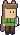
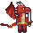
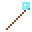
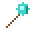
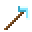
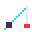
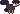
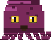
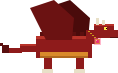

Monsters
About 1 in 8 monsters is an elite (gold crown): roughly double health, harder hits, more coins. Health varies a little between individuals and rises with difficulty. Coins and items drop on the ground; walk within two blocks to pick them up.
| Monster | Where | Health | Damage | Armor | Coins | Item drops | |
|---|---|---|---|---|---|---|---|
| Zombie | Surface at night, caves | 45 | 10 | 0 | 1-2 | Apple (15%) | |
| Goblin | Goblin forest, caves | 30 | 7 | 0 | 1-2 | Apple (15%), Berries 1-3 (20%) | |
 | Goblin beastmaster (mini-boss) | Forest warcamp, with his pet bear (900 hp) | 900 | 22 | 4 | 25-26 | Apple (15%), Gold bar 2-4 (100%), Ruby 1-2 (60%), Taming whistle 1 (100%) |
 | Skeleton archer (ranged) | Surface at night, caves | 38 | 8 | 1 | 1-2 | Apple (15%), Bone 1-2 (45%) |
 | Orc (club) | Orc island camps and cave base; caves | 95 | 18 | 3 | 3-4 | Apple (15%) |
 | Shark | Ocean | 120 | 20 | 2 | 4-5 | Apple (15%), Shark fin 1 (70%) |
| Jellyfish | Ocean | 30 | 12 | 0 | 1-2 | Apple (15%) | |
 | Piranha | Ocean (schools of 3) | 14 | 6 | 0 | 0-1 | Apple (15%), Raw fish 1 (60%) |
| Eel | Deep ocean | 70 | 14 | 1 | 2-3 | Apple (15%), Raw fish 1-2 (90%) | |
 | Mossy zombie | Moss caves | 70 | 12 | 2 | 1-2 | Apple (15%), Mossy stone 1-3 (50%) |
| Mossy skeleton (ranged) | Moss caves | 55 | 10 | 2 | 1-2 | Apple (15%), Emerald 1 (8%), Bone 1-2 (50%) | |
| Frost archer (ranged) | Ice islands (slowing arrows) | 60 | 11 | 3 | 2-3 | Apple (15%), Ice 1-2 (50%), Bone 1-2 (40%) | |
 | Frost brute | Ice islands (shatters into ice) | 140 | 20 | 6 | 4-5 | Apple (15%), Ice 2-4 (80%), Bone 1-2 (50%) |
 | Magma skeleton (ranged) | Magma depths | 90 | 16 | 5 | 3-4 | Apple (15%), Obsidian 1-2 (40%) |
| Imp | Magma depths, magma fortress | 45 | 12 | 3 | 2-3 | Apple (15%), Ruby 1 (10%) | |
| Ogre (club) | Orc island camps and cave base; bandit camps and caves | 260 | 30 | 6 | 8-9 | Apple (15%), Gold bar 1-2 (35%) | |
 | Grukk the Ogre King (mini-boss) | Deepest chamber of the orc cave base | 13000 | 62 | 12 | 150-151 | Apple (15%), Gold bar 4-8 (100%), Ruby 2-4 (100%), Diamond 2-4 (100%) |
| Orc cutthroat (daggers) | Orc island camps and cave base | 60 | 12 | 2 | 2-3 | Apple (15%) | |
| Orc brute (warhammer) | Orc island camps and cave base | 135 | 26 | 5 | 4-5 | Apple (15%) | |
 | Orc crossbowman (crossbow) (ranged) | Orc island camps, cave base and tower tops | 80 | 15 | 3 | 3-4 | Apple (15%) |
| Goblin knifer | Goblin forest huts; the beastmaster's bodyguard | 36 | 9 | 1 | 1-2 | Apple (15%) | |
| Goblin archer (ranged) | Goblin huts and lookout towers | 30 | 8 | 0 | 1-2 | Apple (15%) | |
 | Ghost | Burned villages at night | 10 | 12 | 0 | 2-3 | Apple (15%) |
| Ghoul (rare) | One burned village every 2 to 5 nights | 400 | 34 | 8 | 40-41 | Apple (15%), A rare weapon for your class (100%) | |
 | Crystal golem | Gem caverns | 260 | 26 | 10 | 6-7 | Apple (15%), Sapphire 1-2 (60%), Emerald 1-2 (40%), Ruby 1 (30%) |
 | Cave bat | Every cave, in pairs; swarms in dripstone caves | 18 | 6 | 0 | 0-1 | Apple (15%), Bone 1 (15%) |
| Jade crab | Jade caves | 170 | 16 | 11 | 3-4 | Apple (15%), Jade shard 1-2 (70%), Emerald 1 (8%) | |
 | Rose wisp (ranged) | Rose quartz caves (flies, throws bolts) | 55 | 11 | 1 | 2-3 | Apple (15%), Rose quartz 1-2 (70%) |
 | Azure spider | Deep azure caves (bite slows you) | 85 | 13 | 3 | 3-4 | Apple (15%), Azure shard 1-2 (60%), Sapphire 1 (6%) |
 | Fossil raptor | Fossil beds, in pairs (pounces) | 110 | 17 | 3 | 3-4 | Apple (15%), Bone 1-3 (80%) |
 | Giant cave spider | Overgrown caverns (its bite webs you and slows you) | 260 | 22 | 6 | 7-8 | Apple (15%), Bone 1-2 (50%), Emerald 1 (8%) |
| Cave bear | Overgrown caverns (enraged below 40% health: faster and harder hitting) | 480 | 34 | 10 | 10-11 | Apple (15%), Bear steak 1-2 (90%), Honey 1 (30%) | |
| Thornback beetle | Overgrown caverns, in pairs (thorns hurt whoever strikes it up close) | 320 | 20 | 18 | 8-9 | Apple (15%), Ruby 1 (8%), Sapphire 1 (8%) | |
| Glow moth | Overgrown caverns, in swarms of three (flies) | 70 | 12 | 1 | 3-4 | Apple (15%), Moon bloom 1-2 (60%) | |
 | Dripstone golem | Stalagmite caves (slow, heavily armored) | 230 | 22 | 12 | 5-6 | Apple (15%), Dripstone 1-2 (70%), Stalagmite 1 (40%) |
| Root wyrm | Root caverns (a burrowing worm) | 150 | 15 | 4 | 3-4 | Apple (15%), Glow bulb 1-2 (50%), Lantern flower 1 (30%) | |
 | Jade mantis | Jade caves (lunges at you from a few blocks away) | 130 | 19 | 3 | 4-5 | Apple (15%), Jade shard 1-2 (50%), Emerald 1 (5%) |
| Rose serpent | Rose caves (its venom slows you) | 120 | 15 | 2 | 3-4 | Apple (15%), Rose quartz 1-2 (60%) | |
| Bone hound | Fossil beds, in packs of three (fast) | 65 | 12 | 1 | 2-3 | Apple (15%), Bone 1-2 (60%) | |
| Shale crawler | Plain caves in the shale layer, in pairs (armored) | 95 | 13 | 9 | 3-4 | Apple (15%), Shale 1-3 (50%), Coal 1-2 (30%) | |
 | Deep stalker | Plain caves in the deepstone layer (leaps from the dark; the strongest plain-cave hunter) | 240 | 26 | 6 | 7-8 | Apple (15%), Bone 1-2 (40%), Sapphire 1 (6%) |
 | Moss troll | Moss caves (big, slow, hits hard) | 320 | 27 | 8 | 8-9 | Apple (15%), Mossy stone 1-3 (60%), Emerald 1 (10%) |
 | Dune scorpion | Desert island (its sting slows you) | 75 | 14 | 5 | 2-3 | Apple (15%), Bone 1 (30%), Sand 1-3 (50%) |
 | Mummy | Desert island at night and the sand caves (slow and tough; its wrappings slow you) | 130 | 15 | 3 | 3-4 | Apple (15%), Bone 1-2 (50%), Gold bar 1 (6%) |
 | Sand wraith (ranged) | Desert island at night and the sand caves (flies and throws sand) | 55 | 12 | 1 | 2-3 | Apple (15%), Sand 1-2 (60%), Ruby 1 (4%) |
 | Vulture | Desert island by day (swoops down at you) | 42 | 10 | 0 | 1-2 | Apple (15%), Bone 1 (30%) |
 | Jackal | Desert island (runs in packs of three) | 48 | 9 | 1 | 1-2 | Apple (15%), Bone 1 (35%) |
 | Magma salamander | Magma realm (fast; its bite sets you burning) | 120 | 18 | 4 | 3-4 | Apple (15%), Obsidian 1-2 (30%), Ruby 1 (6%) |
| Ash wraith (ranged) | Magma realm (flies and throws fire) | 90 | 16 | 2 | 3-4 | Apple (15%), Magma rock 1-3 (50%), Ruby 1 (5%) | |
 | Obsidian beetle | Magma realm (heavily armored; curls up and rolls at you) | 320 | 22 | 16 | 5-6 | Apple (15%), Obsidian 2-4 (80%), Ruby 1 (8%) |